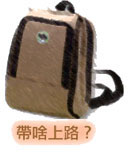

| 腳踏車 | |
一台不要太爛的腳踏車，講白一點就是去買一台5000塊以上的車。 |
| 水、水壺 | |
騎車很累，會流失很多水分，必須不停的喝水（你甚至不會想上廁所） |
| 食物 | |
環島嘴巴會很無聊，會想要吃點什麼東西解解饞。 |
| 馬鞍背包 | |
就是掛在車上的那種包包，要掛這樣的包包，你的車子可能還要去裝一個後座。 |
| 錢 | |
錢可以花。 |
| 防曬油 | |
騎車太陽很大，有時候才早上九點十點，就已經讓人晒的受不了。 |
| 相機 | |
最好是數位的，才不用帶很多捲底片。 |
| 紙跟筆 | |
將你看到的東西，或是幾點經過什麼地方，用紙筆簡單的將它記錄下來。 |
| 地圖 | |
我是路痴，你把我丟在台北車站的地下街裡，我就要在那邊定居了，因為走不出來... |
| 手機 | |
跟家裡報平安，跟朋友聊天，休息時玩貪食蛇或是俄羅斯方塊。 |
| 盥洗用品 | |
我帶了一條毛巾，一隻牙刷跟一顆肥皂。 |
| 衣服 | |
若想裸體騎車我也不反對∼ |
| 太陽眼鏡 | |
擋太陽，在大太陽下騎車，戴上去之後，看起來太陽會變得很小，很實用的幻覺。 |
| 隨身聽 | |
有錢一點可以帶iPod（蘋果的mp3隨身聽），中等一點就帶MD， |
| 保險 | |
為了你自己也為了你的家人，出發前先去買一個平安保險吧！ |
| 筆記型電腦 | |
這應該算是選配啦，一般人應該會認為不帶也無所謂，可是我個人強烈建議， |
| 塑膠袋 | |
衣服洗了沒乾可以裝進去，盥洗用品也需要一個袋子來裝。 |
| 備胎，修車工具，補胎工具...etc | |
要帶這些東西請先確定一件事情，『你會修腳踏車』，不然帶了也沒有用。 |
| 雨傘，雨衣 | |
你可以選擇淋雨。或是等下雨的時候在去7-11買輕便的垃圾袋雨衣。 |
| 心 | |
只要有心，人人都可以是食神！ |